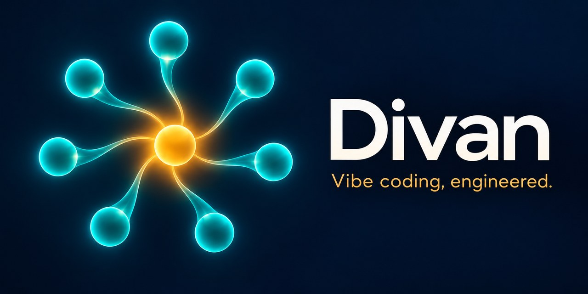

Vibe coding, engineered.
Tell your coding agent what should work. Divan helps it inspect the project, make the change, and show what was actually verified.

From request to checked result
Divan works in your existing coding agent and project. You describe the outcome in ordinary language; it selects the relevant workflow and reports the evidence behind its answer.
Understand the project
Read the current code, rules, and state before choosing a change.
Make the change
Plan when needed, diagnose failures, and keep edits tied to the requested outcome.
Show the proof
Run applicable checks and distinguish passed, failed, skipped, and unverified work.
“People can submit this order twice. Find the cause, fix it, and show how you checked it.”
You do not need to name a skill, MCP server, or agent team.
Install in your coding workspace
Choose one route for each project. Start a new agent conversation after installation.
Codex plugin
Use Codex with plugin support. The plugin itself needs no Node.js, Python, or Divan account.
codex plugin marketplace add trugurpala/divan --ref main
codex plugin add divan@divanOther coding agents
With Node.js 22.20+, use the Skills CLI and select your agent and project scope.
npx --yes skills@1.7.4 add https://github.com/trugurpala/divan/tree/main/plugins/divan/skills --skill '*'What it is: instructions for a coding agent, with focused skills for planning, debugging, review, and verification. What it needs: your host's own tools and permissions. Installing files alone does not prove that an agent discovered them or finished a task.
İstediğin sonucu anlat. Gerçekten ne yapıldığını gör.
Divan, Codex içinde çalışan açık kaynak bir eklenti ve başka kodlama ajanlarına kurulabilen yedi Agent Skills sunar. Projeni inceler, gereken değişikliği yapmaya yardımcı olur ve çalıştırılan kontrolleri açıkça bildirir. Ayrı bir uygulama ya da Divan sunucusu değildir.
Türkçe kurulum rehberi